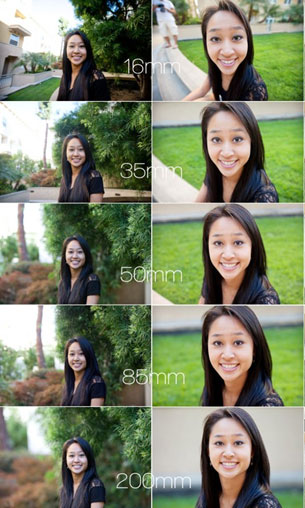

a. Loại máy: Ở đây nghĩa là Cảm biến của từng loại máy ảnh.
Có bao giờ bạn tự hỏi vì sao khi chụp bằng Smartphone, mặc dù thông số của nhà sản xuất ghi là khẩu độ F1.8 tiêu cự 24mm nhưng chụp ảnh nó cứ nét từ đầu tới đuôi, cho dù chụp cận cảnh cũng ít thấy hiệu ứng xóa phông. Còn ở 1 cái lens tiêu cự 24 trên máy DSLR, khẩu độ F1.8 nhưng cùng 1 khoảng cách chụp như nhau thì con DSLR nó lại xóa phông bét nhè. Cơ bản là do cảm biến của DLSR nó to hơn, độ sâu trường ảnh nó lớn hơn, do đó khoảng nét của ảnh mỏng hơn, nên xóa phông be bét. Còn cảm biến của Smartphone nó nhỏ xíu, do đó khoảng nét của ảnh xa hơn rất nhiều. Cũng vì lí do như vậy mà Smartphone chỉ thích hợp cho việc chụp phong cảnh là chính.
(Ảnh so sánh cảm biến của máy ảnh Smartphone và máy DSLR)
b. Tiêu cự: Khi bạn chụp với 1 ống kính với tiêu cự zoom được, ví dụ 24-105/F4. Khi ở khẩu độ F4, nếu bạn chụp ở tiêu cự 24 thì ảnh sẽ nét sâu, còn khi zoom lại gần thì khoảng nét sẽ mỏng hơn và sẽ thấy ảnh có nền sau mẫu sẽ bắt đầu mờ dần. Do đó ở cùng 1 khẩu độ thì tiêu cự càng lớn độ sâu trường ảnh sẽ càng mỏng.

Hình trên mô tả về tiêu cự chụp càng nhỏ thì khoảng nét càng lớn (DoF càng dày). Và nếu bạn chú ý thì tiêu cự có ảnh hưởng đến ảnh khi chụp cùng ở 1 khung hình. Từ 16mm đến 200mm nếu ở cùng 1 khung hình thì sẽ có sự thay đổi biến dạng khác nhau về khuôn mặt của mẫu. Cái này được gọi là
Hiệu ứng tiêu cự (Mình sẽ update vấn đề này trong những phiên bản sau).
c. Khẩu độ: Khi bạn sử dụng 1 ống kính có khẩu độ ghi là F2.8 thì bạn có thể thay đổi khẩu độ đó từ 2.8 cho đến 22 hoặc hơn tùy thuộc vào nhà sản xuất ống kính đó. Và khi F càng lớn thì độ sâu trường ảnh sẽ càng dày với cùng một tiêu cự.
d. Khoảng cách từ Máy ảnh (Cảm biến) đến chủ thể: Ví dụ khi bạn chụp 1 người mẫu đứng cách bạn 5 mét với ống kính tiêu cự 50mm và F2.8 thì bạn sẽ thấy ảnh nét đều từ trước đến sau và mờ dần ở nền sau. Nhưng khi bạn đến gần mẫu khoảng 2 mét thì chỉ còn mỗi mình mẫu là nét, còn nền phía sau sẽ bị xóa mờ, nền càng xa thì càng bị xóa mờ càng nhiều.
Có thể tóm tắt việc điều chỉnh độ sâu trường ảnh như sau nếu bạn không thể thay đổi máy ảnh (nghĩa là không thể thay đổi cảm biến):
Tăng độ sâu trường ảnh:
- Thu hẹp khẩu độ của bạn (số f-stop lớn hơn)
- Đi xa ra khỏi đối tượng muốn chụp
- Rút ngắn chiều dài tiêu cự
Giảm độ sâu trường ảnh:
- Mở rộng khẩu độ của bạn (số f-stop nhỏ hơn)
- Di chuyển gần hơn đến đối tượng chụp
- Kéo dài tiêu cự của bạn
* Lưu ý: Ngoài ra việc mờ hậu cảnh còn phụ thuộc vào khoảng cách giữa chủ thể và hậu cảnh:
Cũng như khoảng cách giữa máy ảnh và chủ thể, khoảng cách giữa chủ thể và hậu cảnh cũng ảnh hưởng đến mức độ nhòe mờ. Khoảng cách giữa chủ thể và hậu cảnh càng xa thì hình ảnh càng nhòe mờ. Trong hai ảnh minh họa dưới đây, ống kính bên phải được di chuyển thụt lùi tới những vi trí khác nhau để so sánh độ nhòe mờ.
Cả hai ống kính đều được lắp đặt ở cùng khoảng cách tính từ máy ảnh đến chủ thể.Ống kính bên phải được di chuyển lùi lại khoảng 15 cm.Ống kính bên phải được di chuyển lùi lại khoảng 30 cm.
Điểm lấy nét được cố định trên ống kính phía bên trái. Bạn có thể thấy hậu cảnh bị nhòe mờ nhiều hơn khi cách xa điểm lấy nét (nơi chủ thể đang đứng) hơn. Trong tình huống bạn có thể di chuyển vật thể ở hậu cảnh, chẳng hạn như khi chụp những vật nhỏ ở trên bàn, bạn có thể điều chỉnh mức độ nhòe mờ theo ý thích bằng cách di chuyển chủ thể chính và vật thể ở hậu cảnh.